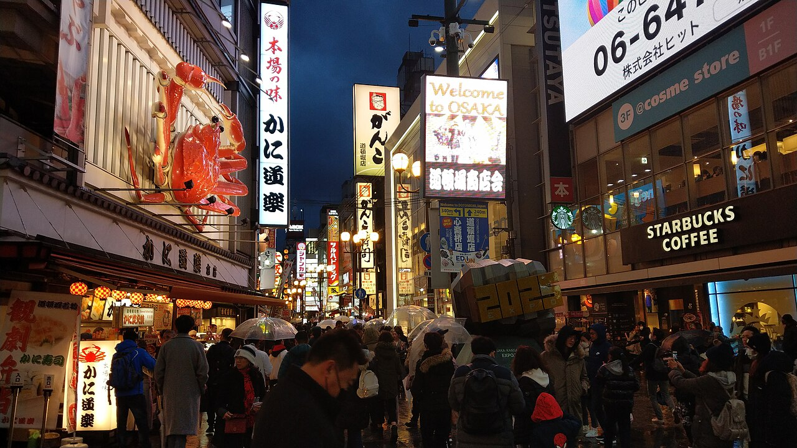
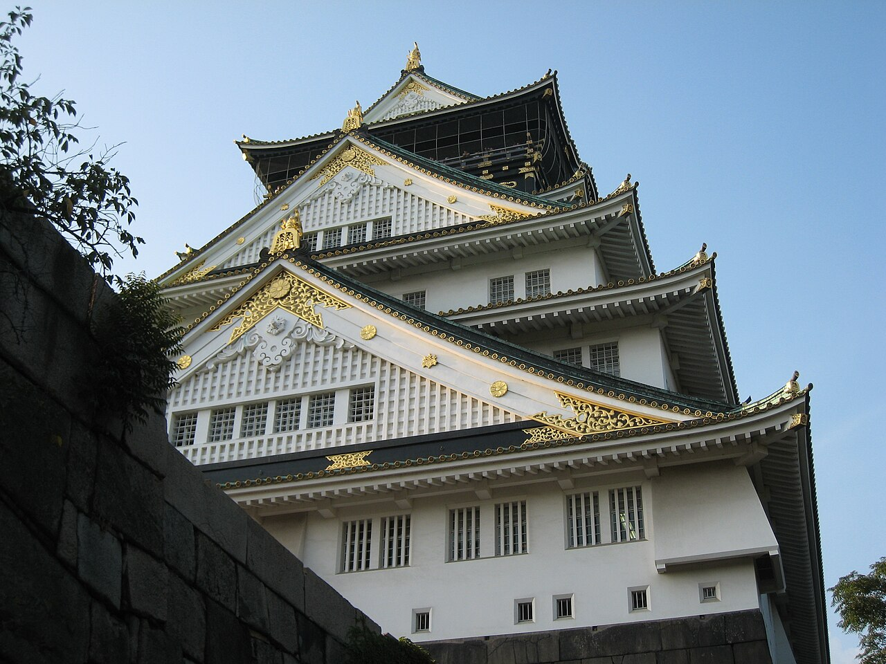

DAY 1
도착하자마자 도톤보리
9/30 수
-
09:05
간사이공항 착륙
입국 심사와 위탁 수하물까지 넉넉히 한 시간. 서둘러도 10시다.
-
10:00
JR 패스 받고 개시
공항역 JR 매표소에서 교환. 이 순간부터 5일이 카운트된다. 같이 지정석 좌석표도 받아둘 것 — 내일 코노토리 좌석이 여기서 확정된다.
-
11:00
오사카 시내로
특급 하루카를 타면 텐노지·신오사카 방면, 난카이 라피트를 타면 난바 직행. 숙소가 난바 쪽이면 난카이가 편하고, 우메다 쪽이면 하루카다.
-
12:00
호텔에 짐만 맡기고 점심
체크인은 보통 오후 3시라 짐만 맡긴다. 바로 도톤보리로.
-
오후
셋이서 하나 고르기
첫날부터 무리하지 말고 하나만. 딸 취향으로 정하는 게 제일 낫다.

-
저녁
글리코 간판 켜지는 시간
해 지고 나면 도톤보리 강변 네온이 본판이다. 저녁은 쿠시카츠 — 소스에 두 번 찍으면 안 된다는 그 집들.
-
숙박
오사카 — 난바 또는 우메다
3인 1실 되는 비즈니스호텔. 내일 아침 신오사카역으로 나가기 편한 위치가 유리하다.